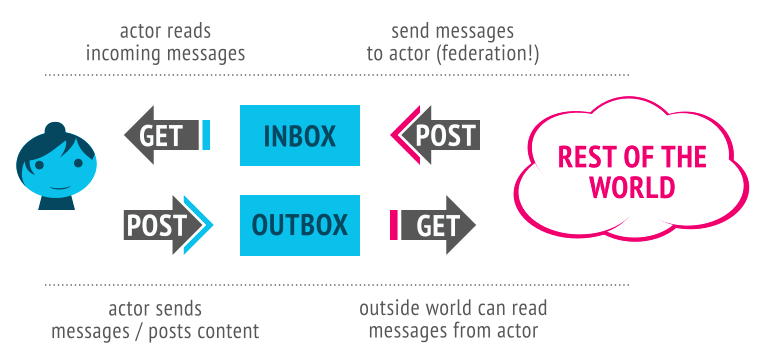

The ActivityPub protocol is a decentralized social networking protocol
based upon the [ActivityStreams] 2.0 data format.
It provides a client to server API for creating, updating and deleting
content, as well as a federated server to server API for delivering
notifications and content.
Status of This Document
This section describes the status of this document at the time of its publication. Other documents may supersede this document. A list of current W3C publications and the latest revision of this technical report can be found in the W3C technical reports index at https://www.w3.org/TR/.
All interested parties are invited to provide implementation and bug
reports and other comments through the Working Group's
Issue tracker.
These will be discussed by the
Social Web Community Group
and considered in any future versions of this specification.
This document has been reviewed by W3C Members, by software developers, and by other W3C
groups and interested parties, and is endorsed by the Director as a W3C Recommendation.
It is a stable document and may be used as reference material or cited from another
document. W3C's role in making the Recommendation is to draw attention to the
specification and to promote its widespread deployment. This enhances the functionality
and interoperability of the Web.
This document was produced by
a group
operating under the
W3C Patent Policy.
W3C maintains a public list of any patent
disclosures
made in connection with the deliverables of
the group; that page also includes
instructions for disclosing a patent. An individual who has actual knowledge of a patent
which the individual believes contains
Essential
Claim(s) must disclose the information in accordance with
section
6 of the W3C Patent Policy.
A server to server federation protocol
(so decentralized websites can share information)
A client to server protocol
(so users, including real-world users, bots, and other automated processes,
can communicate with ActivityPub using their accounts on servers,
from a phone or desktop or web application or whatever)
ActivityPub implementations can implement just one of these things or
both of them.
However, once you've implemented one, it isn't too many steps to
implement the other, and there are a lot of benefits to both (making
your website part of the decentralized social web, and being able to
use clients and client libraries that work across a wide variety of
social websites).
In ActivityPub, a user is represented by "actors"
via the user's accounts on servers.
User's accounts on different servers correspond to different actors.
Every Actor has:
An inbox: How they get messages from the world
An outbox: How they send messages to others
These are endpoints, or really, just URLs which are listed in the
ActivityPub actor's ActivityStreams description.
(More on ActivityStreams later).
Here's an example of the record of our friend Alyssa P. Hacker:
ActivityPub uses [ActivityStreams] for its vocabulary.
This is pretty great because ActivityStreams includes all the common
terms you need to represent all the activities and content flowing
around a social network.
It's likely that ActivityStreams already includes all the vocabulary
you need, but even if it doesn't, ActivityStreams can be extended
via [JSON-LD].
If you know what JSON-LD is, you can take advantage of the cool linked
data approaches provided by JSON-LD.
If you don't, don't worry, JSON-LD documents and ActivityStreams can be
understood as plain old simple JSON.
(If you're going to add extensions, that's the point at which JSON-LD
really helps you out).
So, okay.
Alyssa wants to talk to her friends, and her friends want to talk to
her!
Luckily these "inbox" and "outbox" things can help us out.
They both behave differently for GET and POST.
Let's see how that works:

Hey nice, so just as a recap:
You can POST to someone's inbox to send them a message
(server-to-server / federation only... this is federation!)
You can GET from your inbox to read your latest messages
(client-to-server; this is like reading your social
network stream)
You can POST to your outbox to send messages to the world
(client-to-server)
You can GET from someone's outbox to see what messages they've
posted (or at least the ones you're authorized to see).
(client-to-server and/or server-to-server)
Of course, if that last one (GET'ing from someone's outbox) was the
only way to see what people have sent, this wouldn't be a very
efficient federation protocol!
Indeed, federation happens usually by servers posting messages sent by
actors to actors on other servers' inboxes.
Let's see an example!
Let's say Alyssa wants to catch up with her friend, Ben Bitdiddle.
She lent him a book recently and she wants to make sure he returns it
to her.
Here's the message she composes, as an ActivityStreams object:
Example 2
{"@context": "https://www.w3.org/ns/activitystreams",
"type": "Note",
"to": ["https://chatty.example/ben/"],
"attributedTo": "https://social.example/alyssa/",
"content": "Say, did you finish reading that book I lent you?"}
This is a note addressed to Ben.
She POSTs it to her outbox.
Since this is a non-activity object, the server recognizes that this is
an object being newly created, and does the courtesy of wrapping it in
a Create activity.
(Activities sent around in ActivityPub generally follow the pattern of
some activity by some actor being taken on some object.
In this case the activity is a Create of a Note object, posted by a
Person).
Example 3
{"@context": "https://www.w3.org/ns/activitystreams",
"type": "Create",
"id": "https://social.example/alyssa/posts/a29a6843-9feb-4c74-a7f7-081b9c9201d3",
"to": ["https://chatty.example/ben/"],
"actor": "https://social.example/alyssa/",
"object": {"type": "Note",
"id": "https://social.example/alyssa/posts/49e2d03d-b53a-4c4c-a95c-94a6abf45a19",
"attributedTo": "https://social.example/alyssa/",
"to": ["https://chatty.example/ben/"],
"content": "Say, did you finish reading that book I lent you?"}}
Alyssa's server looks up Ben's ActivityStreams actor object, finds his
inbox endpoint, and POSTs her object to his inbox.
Technically these are two separate steps... one is client to server
communication, and one is server to server communication (federation).
But, since we're using them both in this example, we can abstractly
think of this as being a streamlined submission from outbox to inbox:
Cool!
A while later, Alyssa checks what new messages she's gotten.
Her phone polls her inbox via GET, and amongst a bunch of cat videos
posted by friends and photos of her nephew posted by her sister, she
sees the following:
Example 4
{"@context": "https://www.w3.org/ns/activitystreams",
"type": "Create",
"id": "https://chatty.example/ben/p/51086",
"to": ["https://social.example/alyssa/"],
"actor": "https://chatty.example/ben/",
"object": {"type": "Note",
"id": "https://chatty.example/ben/p/51085",
"attributedTo": "https://chatty.example/ben/",
"to": ["https://social.example/alyssa/"],
"inReplyTo": "https://social.example/alyssa/posts/49e2d03d-b53a-4c4c-a95c-94a6abf45a19",
"content": "<p>Argh, yeah, sorry, I'll get it back to you tomorrow.</p>
<p>I was reviewing the section on register machines,
since it's been a while since I wrote one.</p>"}}
She POSTs this message to her outbox.
(Since it's an activity, her server knows it doesn't need to wrap it in
a Create object).
Feeling happy about things, she decides to post a public message to her
followers.
Soon the following message is blasted to all the members of her
followers collection, and since it has the special Public group
addressed, is generally readable by anyone.
Example 6
{"@context": "https://www.w3.org/ns/activitystreams",
"type": "Create",
"id": "https://social.example/alyssa/posts/9282e9cc-14d0-42b3-a758-d6aeca6c876b",
"to": ["https://social.example/alyssa/followers/",
"https://www.w3.org/ns/activitystreams#Public"],
"actor": "https://social.example/alyssa/",
"object": {"type": "Note",
"id": "https://social.example/alyssa/posts/d18c55d4-8a63-4181-9745-4e6cf7938fa1",
"attributedTo": "https://social.example/alyssa/",
"to": ["https://social.example/alyssa/followers/",
"https://www.w3.org/ns/activitystreams#Public"],
"content": "Lending books to friends is nice. Getting them back is even nicer! :)"}}
1.1 Social Web Working Group
ActivityPub is one of several related
specifications being produced by the Social Web Working Group.
Implementers interested in alternative approaches and complementary
protocols should review [Micropub] and the overview document
[Social-Web-Protocols].
2. Conformance
As well as sections marked as non-normative, all authoring guidelines, diagrams, examples,
and notes in this specification are non-normative. Everything else in this specification is
normative.
The key words MAY, MUST, MUST NOT, SHOULD, and SHOULD NOT are
to be interpreted as described in [RFC2119].
2.1 Specification Profiles
This specification defines two closely related and interacting
protocols:
A client to server protocol, or "Social API"
This protocol permits a client to act on behalf of a user.
For example, this protocol is used by a mobile phone application to
interact with a social stream of the user's actor.
A server to server protocol, or "Federation Protocol"
This protocol is used to distribute activities between actors on
different servers, tying them into the same social graph.
The ActivityPub specification is designed so that once either of
these protocols are implemented, supporting the other is of very
little additional effort.
However, servers may still implement one without the other.
This gives three conformance classes:
ActivityPub conformant Client
This designation applies to any implementation of the entirety of the
client portion of the client to server protocol.
ActivityPub conformant Server
This designation applies to any implementation of the entirety of the
server portion of the client to server protocol.
ActivityPub conformant Federated Server
This designation applies to any implementation of the entirety of
the federation protocols.
It is called out whenever a portion of the specification only applies
to implementation of the federation protocol.
In addition, whenever requirements are specified, it is called out
whether they apply to the client or server (for the client-to-server
protocol) or whether referring to a sending or receiving server in
the server-to-server protocol.
3. Objects
Objects are the core concept around which both [ActivityStreams] and
ActivityPub are built.
Objects are often wrapped in Activities and are contained in streams of
Collections, which are themselves subclasses of Objects.
See the [Activity-Vocabulary] document, particularly the
Core Classes;
ActivityPub follows the mapping of this vocabulary very closely.
ActivityPub defines some terms in addition to those provided by
ActivityStreams.
These terms are provided in the ActivityPub
JSON-LD context
at
https://www.w3.org/ns/activitystreams.
Implementers SHOULD include the ActivityPub context in their
object definitions.
Implementers MAY include additional context as appropriate.
Servers SHOULD validate the content they receive to avoid content
spoofing attacks.
(A server should do something at least as robust as checking that
the object appears as received at its origin, but mechanisms
such as checking signatures would be better if available).
No particular mechanism for verification is authoritatively specified by
this document, but please see Security
Considerations for some suggestions and good practices.
As an example, if example.com receives the activity
it should dereference the id both to ensure that it exists
and is a valid object, and that it is not misrepresenting the object.
(In this example, Mallory could be spoofing an object allegedly posted
by Alice).
3.1 Object Identifiers
All Objects in [ActivityStreams] should have unique global
identifiers.
ActivityPub extends this requirement; all objects distributed by the
ActivityPub protocol MUST have unique global identifiers, unless they
are intentionally transient (short lived activities that are not
intended to be able to be looked up, such as some kinds of chat
messages or game notifications).
These identifiers must fall into one of the following groups:
Publicly dereferencable URIs, such as HTTPS URIs, with their
authority belonging to that of their originating server.
(Publicly facing content SHOULD use HTTPS URIs).
An ID explicitly specified as the JSON null object,
which implies an anonymous object (a part of its parent context)
Identifiers MUST be provided for activities posted in server to
server communication, unless the activity is intentionally transient.
However, for client to server communication, a server receiving an
object posted to the outbox with no specified idSHOULD
allocate an object ID in the actor's namespace and attach it to the
posted object.
All objects have the following properties:
id
The object's unique global identifier (unless the object is transient,
in which case the idMAY be omitted).
type
The type of the object.
3.2 Retrieving objects
The HTTP GET method may be dereferenced against an object's
id property to retrieve the activity.
Servers MAY use HTTP content negotiation as defined in [RFC7231] to
select the type of data to return in response to a request,
but MUST present the ActivityStreams object representation
in response to
application/ld+json; profile="https://www.w3.org/ns/activitystreams",
and SHOULD also present the ActivityStreams representation in
response to application/activity+json as well.
The client MUST specify an Accept header with the
application/ld+json; profile="https://www.w3.org/ns/activitystreams"
media type in order to retrieve the activity.
Servers MAY implement other behavior for requests which do not comply
with the above requirement.
(For example, servers may implement additional legacy protocols, or
may use the same URI for both HTML and ActivityStreams
representations of a resource).
Servers MAY require authorization as specified in
B.1Authentication and Authorization, and may additionally implement their
own authorization rules.
Servers SHOULD fail requests which do not pass their authorization
checks with the appropriate HTTP error code, or the 403 Forbidden
error code where the existence of the object is considered private.
An origin server which does not wish to disclose the existence of
a private target MAY instead respond with a status code of
404 Not Found.
3.3 The source property
In addition to all the properties defined by the
[Activity-Vocabulary], ActivityPub extends the Object by
supplying the source property.
The source property is intended to convey some
sort of source from which the content markup
was derived, as a form of provenance, or to support future
editing by clients.
In general, clients do the conversion from source
to content, not the other way around.
The value of source is itself an object
which uses its own content and mediaType
fields to supply source information.
Example 8
{
"@context": ["https://www.w3.org/ns/activitystreams",
{"@language": "en"}],
"type": "Note",
"id": "http://postparty.example/p/2415",
"content": "<p>I <em>really</em> like strawberries!</p>",
"source": {
"content": "I *really* like strawberries!",
"mediaType": "text/markdown"}
}
Note: What to do when clients can't meaningfully handle a mediaType?
In general, it's best to let a user edit their original post
in the same source format they originally composed it in.
But not all clients can reliably provide a nice interface for
all source types, and since clients are expected to do the
conversion from source to content,
some clients may work with a media type that another client
does not know how to work with.
While a client could feasibly provide the content
markup to be edited and ignore the source, this means that the
user will lose the more desirable form of the original
source in any future revisions.
A client doing so should thus provide a minimally obtrusive warning
cautioning that the original source format is not understood and is
thus being ignored.
For example, Alyssa P. Hacker likes to post to her ActivityPub
powered blog via an Emacs client she has written, leveraging
Org mode.
Later she switches to editing on her phone's client, which
has no idea what text/x-org is or how to render
it to HTML, so it provides a text box to edit the original
content instead.
A helpful warning displays above the edit area saying,
"This was originally written in another markup language we don't
know how to handle. If you edit, you'll lose your original
source!"
Alyssa decides the small typo fix isn't worth losing her nice
org-mode markup and decides to make the update when she gets
home.
4. Actors
ActivityPub actors are generally one of the
ActivityStreams Actor Types,
but they don't have to be. For example, a
Profile object
might be used as an actor, or a type from an ActivityStreams extension.
Actors are retrieved like any other
Object in ActivityPub.
Like other ActivityStreams objects, actors have an id,
which is a URI.
When entered directly into a user interface (for example on a login
form), it is desirable to support simplified naming.
For this purpose, ID normalization SHOULD be performed as follows:
If the entered ID is a valid URI, then it is to be used directly.
If it appears that the user neglected to add a scheme for a URI that
would otherwise be considered valid, such as
example.org/alice/, clients MAY attempt to provide
a default scheme, preferably https.
Otherwise, the entered value should be considered invalid.
Once the actor's URI has been identified, it should be dereferenced.
Note
ActivityPub does not dictate a specific relationship between
"users" and Actors; many configurations are possible.
There may be multiple human users or organizations controlling an
Actor, or likewise one human or organization may control multiple
Actors. Similarly, an Actor may represent a piece of software,
like a bot, or an automated process.
More detailed "user" modelling, for example linking together of Actors which
are controlled by the same entity, or allowing one Actor to be presented
through multiple alternate profiles or aspects, are at the discretion
of the implementation.
4.1 Actor objects
Actor objects MUST have, in addition to the properties mandated by
3.1Object Identifiers, the following properties:
Implementations MAY, in addition, provide the following properties:
streams
A list of supplementary Collections which may be of interest.
preferredUsername
A short username which may be used to refer to the actor, with no
uniqueness guarantees.
endpoints
A json object which maps additional (typically server/domain-wide)
endpoints which may be useful either for this actor or someone
referencing this actor.
This mapping may be nested inside the actor document as the value
or may be a link to a JSON-LD document with these properties.
The endpoints mapping MAY include the following
properties:
proxyUrl
Endpoint URI so this actor's clients may access remote
ActivityStreams objects which require authentication to access.
To use this endpoint, the client posts an
x-www-form-urlencodedid parameter
with the value being the id of the requested
ActivityStreams object.
oauthAuthorizationEndpoint
If OAuth 2.0 bearer tokens [RFC6749] [RFC6750] are being used
for authenticating
client to server
interactions,
this endpoint specifies a URI at which a browser-authenticated user
may obtain a new authorization grant.
oauthTokenEndpoint
If OAuth 2.0 bearer tokens [RFC6749] [RFC6750] are being used
for authenticating
client to server
interactions,
this endpoint specifies a URI at which a client may acquire an
access token.
provideClientKey
If Linked Data Signatures and HTTP Signatures are being used for
authentication and authorization, this endpoint specifies a URI at
which browser-authenticated users may authorize a client's public
key for
client to server
interactions.
signClientKey
If Linked Data Signatures and HTTP Signatures are being used for
authentication and authorization, this endpoint specifies a URI at
which a client key may be signed by the actor's key for a time
window to act on behalf of the actor in interacting with foreign
servers.
As the upstream vocabulary for ActivityPub, any applicable
[ActivityStreams] property may be used on ActivityPub Actors.
Some ActivityStreams properties are particularly worth highlighting
to demonstrate how they are used in ActivityPub implementations.
url
A link to the actor's "profile web page", if not equal to the
value of id.
name
The preferred "nickname" or "display name" of the actor.
summary
A quick summary or bio by the user about themselves.
icon
A link to an image or an Image object which represents the user's
profile picture (this may be a thumbnail).
[ActivityStreams] defines the collection concept; ActivityPub
defines several collections with special behavior.
Note that ActivityPub makes use of
ActivityStreams paging
to traverse large sets of objects.
Note that some of these collections are specified to be of type
OrderedCollection
specifically, while others are permitted to be either a
Collection
or an
OrderedCollection.
An
OrderedCollectionMUST be presented consistently in reverse chronological order.
Note
What property is used to determine the reverse chronological order
is intentionally left as an implementation detail.
For example, many SQL-style databases use an incrementing integer
as an identifier, which can be reasonably used for handling
insertion order in most cases.
In other databases, an insertion time timestamp may be preferred.
What is used isn't important, but the ordering of elements must
remain intact, with newer items first.
A property which changes regularly, such a "last updated" timestamp,
should not be used.
5.1 Outbox
The outbox is discovered through the outbox
property of an actor's profile.
The outboxMUST be an
OrderedCollection.
The outbox stream contains activities the user has
published, subject to the ability of the requestor to retrieve the
activity (that is, the contents of the outbox are filtered by the
permissions of the person reading it).
If a user submits a request without
Authorization the server should
respond with all of the Public
posts.
This could potentially be all relevant objects published by the
user, though the number of available items is left to the
discretion of those implementing and deploying the server.
The inbox is discovered through the inbox
property of an actor's profile.
The inboxMUST be an
OrderedCollection.
The inbox stream contains all activities received by the
actor.
The server SHOULD filter content according to the requester's
permission.
In general, the owner of an inbox is likely to be able to access
all of their inbox contents. Depending on access control, some
other content may be public, whereas other content may require
authentication for non-owner users, if they can access the inbox
at all.
The server MUST perform de-duplication of activities returned by
the inbox. Duplication can occur if an activity is addressed both
to an actor's followers, and a specific
actor who also follows the recipient actor, and the server has failed
to de-duplicate the recipients list.
Such deduplication MUST be performed by comparing the
id of the activities and dropping any activities
already seen.
The inboxes of actors on federated servers accepts HTTP POST requests,
with behaviour described in Delivery.
Non-federated servers SHOULD return a 405 Method Not Allowed upon
receipt of a POST request.
5.3 Followers Collection
Every actorSHOULD have a followers
collection.
This is a list of everyone who has sent a
Follow
activity for the actor, added as a
side effect.
This is where one would find a list of all the actors that are
following the actor.
The followers collection MUST be either an
OrderedCollection
or a
Collection
and MAY be filtered on privileges of an authenticated user
or as appropriate when no authentication is given.
Note: Default for notification targeting
The follow activity generally is a request to see the objects an actor
creates. This makes the Followers collection an appropriate default
target for delivery of notifications.
5.4 Following Collection
Every actor SHOULD have a following collection.
This is a list of everybody that the actor has followed, added as a
side effect.
The following collection MUST be either an
OrderedCollection
or a
Collection
and MAY be filtered on privileges of an authenticated user
or as appropriate when no authentication is given.
5.5 Liked Collection
Every actor MAY have a liked collection.
This is a list of every object from all of the actor's Like
activities, added as a side effect.
The liked collection MUST be either an
OrderedCollection
or a
Collection
and MAY be filtered on privileges of an authenticated user
or as appropriate when no authentication is given.
5.6 Public Addressing
In addition to [ActivityStreams] collections and objects,
Activities may additionally be addressed to the special "public"
collection, with the identifier
https://www.w3.org/ns/activitystreams#Public.
For example:
Activities addressed to this special URI shall be accessible to all
users, without authentication.
Implementations MUST NOT deliver to the "public" special collection;
it is not capable of receiving actual activities.
However, actors MAY have a
sharedInbox
endpoint which is available for efficient shared delivery of public
posts (as well as posts to followers-only); see
7.1.3Shared Inbox Delivery.
Note
Compacting an ActivityStreams object using the ActivityStreams
JSON-LD context might result in
https://www.w3.org/ns/activitystreams#Public
being represented as simply Public or as:Public
which are valid representations of the Public collection.
Implementations which treat ActivityStreams objects as simply
JSON rather than converting an incoming activity over to a
local context using JSON-LD tooling should be aware of this
and should be prepared to accept all three representations.
5.7 Likes Collection
Every object MAY have a likes collection.
This is a list of all Like activities with this object
as the object property, added as a
side effect.
The likes collection MUST be either an
OrderedCollection
or a
Collection
and MAY be filtered on privileges of an authenticated user
or as appropriate when no authentication is given.
Note
Care should be taken to not confuse the the
likes
collection with the similarly named but different
liked collection.
In sum:
liked:
Specifically a property of actors.
This is a collection of Like activities performed
by the actor,
added to the collection as a
side effect of delivery to the outbox.
likes:
May be a property of any object.
This is a collection of Like activities referencing
this object,
added to the collection as a
side effect of delivery to the inbox.
5.8 Shares Collection
Every object MAY have a shares collection.
This is a list of all Announce activities with this object
as the object property, added as a
side effect.
The shares collection MUST be either an
OrderedCollection
or a
Collection
and MAY be filtered on privileges of an authenticated user
or as appropriate when no authentication is given.
6. Client to Server Interactions
Activities as defined by [ActivityStreams] are the core mechanism
for creating, modifying and sharing content within the social graph.
Client to server interaction takes place through clients posting
Activities to an actor's outbox.
To do this, clients MUST discover the URL of the actor's outbox from
their profile and then MUST make an HTTP
POST request to this URL with the Content-Type of
application/ld+json; profile="https://www.w3.org/ns/activitystreams".
Servers MAY interpret a Content-Type or Accept header of
application/activity+json as equivalent
to application/ld+json; profile="https://www.w3.org/ns/activitystreams"
for client-to-server interactions.
The request MUST be authenticated with the credentials of the user to
whom the outbox belongs.
The body of the POST request MUST contain a single
Activity (which MAY contain embedded objects), or a single non-Activity
object which
will be wrapped in a Create activity
by the server.
If an Activity is submitted with a value in the id
property, servers MUST ignore this and generate a new id
for the Activity.
Servers MUST return a 201 Created HTTP code, and unless
the activity is transient, MUST include the new id in the
Location header.
Example 12: Outbox response to submitted Activity
HTTP/1.1 201 Created
Location: https://dustycloud.org/likes/345
The server MUST remove the bto and/or bcc
properties, if they exist, from the ActivityStreams object before
delivery, but MUST utilize the addressing originally stored
on the bto / bcc properties for determining
recipients in delivery.
The server MUST then add this new Activity to the
outbox collection.
Depending on the type of Activity, servers may then be required to
carry out further side effects.
(However, there is no guarantee that time the Activity may appear in
the outbox.
The Activity might appear after a delay or disappear at any period).
These are described per individual Activity below.
Attempts to submit objects to servers not implementing client to server
support SHOULD result in a 405 Method Not Allowed response.
HTTP caching mechanisms [RFC7234] SHOULD be respected when
appropriate, both in clients receiving responses from servers as well
as servers sending responses to clients.
6.1 Client Addressing
Clients are responsible for addressing new Activities
appropriately.
To some extent, this is dependent upon the particular client
implementation, but clients must be aware that the server will only
forward new Activities to addressees in the to,
bto, cc, bcc, and
audience fields.
Clients SHOULD look at any objects attached to the new Activity via the
object, target, inReplyTo and/or
tag fields, retrieve theiractor or
attributedTo properties, and MAY also retrieve their addressing
properties, and add these to the to or cc
fields of the new Activity being created.
Clients MAY recurse through attached objects, but if doing so, SHOULD
set a limit for this recursion.
(Note that this does not suggest that the client should "unpack"
collections of actors being addressed as individual recipients).
Clients MAY give the user the chance to amend this addressing in the
UI.
For example, when Chris likes the following article by Amy:
The receiving outbox can then perform delivery
to not only the followers of Chris (the liker), but also to Amy, and Amy's
followers and Evan, both of whom received the original article.
Clients submitting the following activities to an outboxMUST provide the object property in the activity:
Create, Update, Delete,
Follow, Add, Remove,
Like, Block, Undo.
Additionally, clients submitting the following activities to an outbox
MUST also provide the target property:
Add, Remove.
6.2 Create Activity
The Create activity is used when posting a new object.
This has the side effect that the object embedded within the Activity
(in the object property) is created.
When a Create activity is posted, the actor
of the activity SHOULD be copied onto the object's
attributedTo field.
A mismatch between addressing of the Create activity and its
object is likely to lead to confusion.
As such, a server SHOULD copy any recipients of the Create activity
to its object upon initial distribution, and likewise
with copying recipients from the object to the wrapping
Create activity.
Note that it is acceptable for the object's addressing
to be changed later without changing the Create's
addressing (for example via an Update activity).
6.2.1 Object creation without a Create Activity
For client to server posting, it is possible to submit an object for
creation without a surrounding activity.
The server MUST accept a valid [ActivityStreams] object that
isn't a subtype of Activity in the POST request to the
outbox.
The server then MUST attach this object as the object
of a Create Activity.
For non-transient objects, the server MUST attach an
id to both the wrapping Create and its
wrapped Object.
Note
The Location value returned by the server should be the URL of
the new Create activity (rather than the object).
Any to, bto, cc, bcc,
and audience properties specified on the object MUST be
copied over to the new Create activity by the server.
Example 15: Object with audience targeting
{
"@context": "https://www.w3.org/ns/activitystreams",
"type": "Note",
"content": "This is a note",
"published": "2015-02-10T15:04:55Z",
"to": ["https://example.org/~john/"],
"cc": ["https://example.com/~erik/followers",
"https://www.w3.org/ns/activitystreams#Public"]
}
The above example could be converted to this:
Example 16: Create Activity wrapper generated by the server
The Update activity is used when updating an already
existing object.
The side effect of this is that the objectMUST be
modified to reflect the new structure as defined in the update
activity, assuming the actor has permission to update this
object.
6.3.1 Partial Updates
For client to server interactions, updates are partial;
rather than updating the document all at once, any key value
pair supplied is used to replace the existing value with
the new value.
This only applies to the top-level fields of the updated
object.
A special exception is for when the value is the json
null type; this means that this field should be
removed from the server's representation of the object.
Note that this behavior is for client to server interaction where
the client is posting to the server only.
Server to server interaction and updates from the server to the client
should contain the entire new representation of the object, after
the partial update application has been applied.
See the description of the
Update activity for server to server
interactions
for more details.
6.4 Delete Activity
The Delete activity is used to delete an already
existing object.
The side effect of this is that the server MAY replace the
object with a Tombstone of the object
that will be displayed in activities which reference the deleted
object.
If the deleted object is requested the server SHOULD respond with
either the HTTP 410 Gone status code if a Tombstone
object is presented as the response body, otherwise respond with a
HTTP 404 Not Found.
The Follow activity is used to subscribe to the
activities of another actor.
The side effect of receiving this in an outbox
is that the server SHOULD add the object to the
actor's following Collection
when and only if an Accept activity is subsequently
received with this Follow activity as its object.
6.6 Add Activity
Upon receipt of an Add activity into the
outbox, the server SHOULD
add the object to the collection specified in the
target property, unless:
the target is not owned by the receiving
server, and thus they are not authorized to update it.
the object is not allowed to be added to the
target collection for some other reason, at the
receiving server's discretion.
6.7 Remove Activity
Upon receipt of a Remove activity into the
outbox, the server SHOULD
remove the object from the collection specified in the
target property, unless:
the target is not owned by the receiving server, and
thus they are not authorized to update it.
the object is not allowed to be removed from the
target collection for some other reason, at the
receiving server's discretion.
6.8 Like Activity
The Like activity indicates the actor likes
the object.
The side effect of receiving this in an outbox
is that the server SHOULD add the object to the
actor's liked Collection.
6.9 Block Activity
The Block activity is used to indicate that the posting
actor does not want another actor (defined in the object
property) to be able to interact with objects posted by the actor
posting the Block activity.
The server SHOULD prevent the blocked user from interacting with any object
posted by the actor.
Servers SHOULD NOT deliver Block Activities to their object.
6.10 Undo Activity
The Undo activity is used to undo a previous activity.
See the Activity Vocabulary documentation on
Inverse Activities and "Undo".
For example, Undo may be used to undo a previous
Like, Follow, or Block.
The undo activity and the activity being undone MUST both have the
same actor.
Side effects should be undone, to the extent possible.
For example, if undoing a Like, any counter that had
been incremented previously should be decremented appropriately.
There are some exceptions where there is an existing and explicit
"inverse activity" which should be used instead.
Create based activities should instead use
Delete, and Add activities should use
Remove.
6.11 Delivery
Federated servers MUST perform delivery on all Activities posted to the
outbox according to
outbox delivery.
6.12 Uploading Media
This section is non-normative.
Servers MAY support uploading document types to be referenced in
activites, such as images, video or other binary data, but the
precise mechanism is out of scope for this version of ActivityPub.
The Social Web Community Group is refining the protocol in the
ActivityPub Media Upload report.
7. Server to Server Interactions
Servers communicate with other servers and propagate information across
the social graph by posting activities to actors'
inbox endpoints.
An Activity sent over the network SHOULD have an id,
unless it is intended to be transient (in which case it MAY omit the
id).
POST requests (eg. to the inbox) MUST be made with a Content-Type of
application/ld+json; profile="https://www.w3.org/ns/activitystreams"
and GET requests (see also 3.2Retrieving objects)
with an Accept header of
application/ld+json; profile="https://www.w3.org/ns/activitystreams".
Servers SHOULD interpret a Content-Type or Accept
header of application/activity+json as equivalent
to application/ld+json; profile="https://www.w3.org/ns/activitystreams"
for server-to-server interactions.
In order to propagate updates throughout the social graph, Activities
are sent to the appropriate recipients.
First, these recipients are determined through following the
appropriate links between objects until you reach an actor, and then
the Activity is inserted into the actor's inbox
(delivery).
This allows recipient servers to:
conduct any side effects related to the Activity (for example,
notification that an actor has liked an object is used to update the
object's like count);
deliver the Activity to recipients of the original object, to ensure
updates are propagated to the whole social graph (see
inbox delivery).
an Activity being created in an actor's outbox
with directly addressed recipients.
an Activity being created in an actors's outbox
with user-curated collections as recipients.
an Activity being created in an actor's outbox or
inbox which references another object.
Servers performing delivery to the inbox or
sharedInbox properties of actors on other servers MUST
provide the object property in the activity:
Create, Update, Delete,
Follow, Add, Remove,
Like, Block, Undo.
Additionally, servers performing server to server delivery of the
following activities MUST also provide the target
property: Add, Remove.
HTTP caching mechanisms [RFC7234] SHOULD be respected when
appropriate, both when receiving responses from other servers as well
as sending responses to other servers.
7.1 Delivery
The following is required by federated servers communicating with
other federated servers only.
An activity is delivered to its targets (which are
actors) by first looking up the targets'
inboxes and then posting the activity to those inboxes.
Targets for delivery are determined by checking the
ActivityStreams audience targeting;
namely, the to, bto, cc,
bcc, and audience fields of the activity.
The inbox is determined by first
retrieving the target actor's JSON-LD representation
and then looking up the inbox property.
If a recipient is a Collection or OrderedCollection,
then the server MUST dereference the collection (with the user's
credentials) and discover inboxes for each item in the collection.
Servers MUST limit the number of layers of indirections through
collections which will be performed, which MAY be one.
Servers MUST de-duplicate the final recipient list. Servers MUST also
exclude actors from the list which are the same as the actor
of the Activity being notified about. That is, actors shouldn't have their
own activities delivered to themselves.
Note: Silent and private activities
What to do when there are no recipients specified is not defined,
however it's recommended that if no recipients are specified the
object remains completely private and access controls restrict the
access to object.
If the object is just sent to the "public" collection the object is
not delivered to any actors but is publicly viewable in the actor's
outbox.
An HTTP POST request (with authorization of the submitting user) is
then made to the inbox, with the Activity as
the body of the request.
This Activity is added by the receiver as an item in the
inbox OrderedCollection.
Attempts to deliver to an inbox on a non-federated server SHOULD
result in a 405 Method Not Allowed response.
For federated servers performing delivery to a third party server,
delivery SHOULD be performed asynchronously, and SHOULD additionally
retry delivery to recipients if it fails due to network error.
Note: Activities being distributed between actors on
the same origin may use any internal mechanism, and are not required
to use HTTP.
Note: Relationship to Linked Data Notifications
While it is not required reading to understand this specification,
it is worth noting that ActivityPub's targeting and delivery
mechanism overlaps with the
Linked Data Notifications
specification, and the two specifications may interoperably
combined.
In particular, the inbox property is the same between
ActivityPub and Linked Data Notifications, and the targeting
and delivery systems described in this document are supported
by Linked Data Notifications.
In addition to JSON-LD compacted ActivityStreams documents, Linked
Data Notifications also supports a number of RDF serializations
which are not required for ActivityPub implementations.
However, ActivityPub implementations which wish to be more broadly
compatible with Linked Data Notifications implementations may wish to
support other RDF representations.
7.1.1 Outbox Delivery Requirements for Server to Server
Note: Forwarding to avoid the ghost replies problem
The following section is to mitigate the "ghost replies" problem
which occasionally causes problems on federated networks.
This problem is best demonstrated with an example.
Alyssa makes a post about her having successfully presented a
paper at a conference and sends it to her followers collection,
which includes her friend Ben.
Ben replies to Alyssa's message congratulating her and includes
her followers collection on the recipients.
However, Ben has no access to see the members of Alyssa's
followers collection, so his server does not forward his messages
to their inbox.
Without the following mechanism, if Alyssa were then to reply to
Ben, her followers would see Alyssa replying to Ben without having
ever seen Ben interacting.
This would be very confusing!
When Activities are received in the inbox, the
server needs to forward these to recipients that the origin was unable
to deliver them to. To do this, the server MUST target and
deliver
to the values of to, cc, and/or audience
if and only if all of the following are true:
This is the first time the server has seen this Activity.
The values of to, cc, and/or
audience contain a Collection owned by the server.
The values of inReplyTo, object,
target and/or tag are objects owned by
the server.
The server SHOULD recurse through these values to look for linked objects
owned by the server, and SHOULD set a maximum limit for recursion (ie. the
point at which the thread is so deep the recipients followers may not mind
if they are no longer getting updates that don't directly involve the
recipient).
The server MUST only target the values of to,
cc, and/or audience
on the original object being forwarded, and not pick up any new
addressees whilst recursing through the linked objects
(in case these addressees were purposefully amended by or via the client).
The server MAY filter its delivery targets according to
implementation-specific rules (for example, spam filtering).
7.1.3 Shared Inbox Delivery
For servers hosting many actors, delivery to all followers can
result in an overwhelming number of messages sent.
Some servers would also like to display a list of all messages
posted publicly to the "known network".
Thus ActivityPub provides an optional mechanism for serving these
two use cases.
When an object is being delivered to the originating actor's
followers, a server MAY reduce the number of receiving actors
delivered to by identifying all followers which share the same
sharedInbox
who would otherwise be individual recipients and instead deliver
objects to said sharedInbox.
Thus in this scenario, the remote/receiving server participates
in determining targeting and performing delivery to specific
inboxes.
Additionally, if an object is addressed to the
Public special collection, a
server MAY deliver that object to all known
sharedInbox endpoints on the network.
Origin servers sending publicly addressed activities to
sharedInbox endpoints MUST still deliver to actors
and collections otherwise addressed (through to,
bto, cc, bcc, and
audience) which do not have a sharedInbox
and would not otherwise receive the activity through the
sharedInbox mechanism.
7.2 Create Activity
Receiving a Create activity in an inbox has
surprisingly few side effects; the activity should appear in the
actor's inbox and it is likely that the server will want
to locally store a representation of this activity and its accompanying
object.
However, this mostly happens in general with processing activities
delivered to an inbox anyway.
7.3 Update Activity
For server to server interactions, an Update activity
means that the receiving server SHOULD update its copy of the
object of the same id to the copy
supplied in the Update activity.
Unlike the
client to server handling of the Update activity,
this is not a partial update but a complete replacement of the object.
The receiving server MUST take care to be sure that the
Update is authorized to modify its object.
At minimum, this may be done by ensuring that the Update
and its object are of same origin.
7.4 Delete Activity
The side effect of receiving this is that (assuming the
object is owned by the sending actor / server) the
server receiving the delete activity SHOULD remove its representation
of the object with the same id, and MAY
replace that representation with a Tombstone object.
(Note that after an activity has been transmitted from an origin
server to a remote server, there is nothing in the ActivityPub
protocol that can enforce remote deletion of an object's
representation).
7.5 Follow Activity
The side effect of receiving this in an inbox is
that the server SHOULD generate either an Accept or
Reject activity with the Follow as the
object and deliver it to the actor of the
Follow.
The Accept or RejectMAY be generated
automatically, or MAY be the result of user input (possibly after
some delay in which the user reviews).
Servers MAY choose to not explicitly send a Reject
in response to a Follow, though implementors ought to
be aware that the server sending the request could be left in an
intermediate state.
For example, a server might not send a Reject to protect
a user's privacy.
In the case of receiving an Accept referencing this
Follow as the object, the server SHOULD add the
actor to the object actor's
Followers Collection.
In the case of a Reject, the server MUST NOT add the
actor to the object actor's
Followers Collection.
Note
Sometimes a successful Follow subscription may
occur but at some future point delivery to the follower fails
for an extended period of time.
Implementations should be aware that there is no guarantee
that actors on the network will remain reachable and should
implement accordingly.
For instance, if attempting to deliver to an actor for perhaps
six months while the follower remains unreachable, it is
reasonable that the delivering server remove the subscriber
from the followers list.
Timeframes and behavior for dealing with unreachable actors are
left to the discretion of the delivering server.
7.6 Accept Activity
The side effect of receiving this in an inbox is
determined by the type of the object received,
and it is possible to accept types not described in this document
(for example, an Offer).
If the object of an Accept received to an
inbox is a Follow activity
previously sent by the receiver, the server SHOULD add the
actor to the receiver's
Following Collection.
7.7 Reject Activity
The side effect of receiving this in an inbox is
determined by the type of the object received,
and it is possible to reject types not described in this document
(for example, an Offer).
If the object of a Reject received to an
inbox is a Follow activity
previously sent by the receiver, this means the recipient did not
approve the Follow request. The server MUST NOT add the
actor to the receiver's
Following Collection.
7.8 Add Activity
Upon receipt of an Add activity into the
inbox, the server SHOULD
add the object to the collection specified in the
target property, unless:
the target is not owned by the receiving server, and
thus they can't update it.
the object is not allowed to be added to the
target collection for some other reason, at the
receiver's discretion.
7.9 Remove Activity
Upon receipt of a Remove activity into the
inbox, the server SHOULD
remove the object from the collection specified in the
target property, unless:
the target is not owned by the receiving server, and
thus they can't update it.
the object is not allowed to be removed to the
target collection for some other reason, at the
receiver's discretion.
7.10 Like Activity
The side effect of receiving this in an inbox is
that the server SHOULD increment the object's count of likes by
adding the received activity to the
likes collection
if this collection is present.
7.11 Announce Activity (sharing)
Upon receipt of an Announce activity in an
inbox, a server SHOULD increment the object's count
of shares by adding the received activity to the
shares collection
if this collection is present.
Note
The Announce activity is effectively what is known as
"sharing", "reposting", or "boosting" in other social networks.
ActivityPub uses authentication for two purposes; first, to
authenticate clients to servers, and secondly in federated
implementations to authenticate servers to each other.
Servers should not trust client submitted content, and
federated servers also should not trust content received from a server
other than the content's origin without some form of verification.
Servers should be careful to verify that new content is really posted
by the actor that claims to be posting it, and that the actor has
permission to update the resources it claims to.
See also
3.Objects and B.1Authentication and Authorization.
B.3 Accessing localhost URIs
It is often convenient while developing to test against a process
running on localhost.
However, permitting requests to localhost in a production client or
server instance can be dangerous.
Making requests to URIs on localhost which do not require
authorization may unintentionally access or modify resources assumed
to be protected to be usable by localhost-only.
If your ActivityPub server or client does permit making requests to
localhost URIs for development purposes, consider making it a
configuration option which defaults to off.
B.4 URI Schemes
There are many types of URIs aside from just http and
https.
Some libraries which handle fetching requests at various URI schemes
may try to be smart and reference schemes which may be undesirable,
such as file.
Client and server authors should carefully check how their libraries
handle requests, and potentially whitelist only certain safe URI
types, such as http and https.
B.5 Recursive Objects
Servers should set a limit on how deep to recurse while resolving objects,
or otherwise specially handle ActivityStreams objects with recursive
references.
Failure to properly do so may result in denial-of-service security
vulnerabilities.
B.6 Spam
Spam is a problem in any network, perhaps especially so in federated
networks.
While no specific mechanism for combating spam is provided in
ActivityPub, it is recommended that servers filter incoming content
both by local untrusted users and any remote users through some
sort of spam filter.
B.7 Federation denial-of-service
Servers should implement protections against denial-of-service
attacks from other, federated servers.
This can be done using, for example, some kind of ratelimiting
mechanism.
Servers should be especially careful to implement this protection
around activities that involve side effects.
Servers SHOULD also take care not to overload servers with
submissions, for example by using an exponential backoff strategy.
B.8 Client-to-server ratelimiting
Servers should ratelimit API client submissions.
This serves two purposes:
It prevents malicious clients from conducting
denial-of-service attacks on the server.
It ensures that the server will not distribute so many
activities that it triggers another
server's denial-of-service
protections.
B.9 Client-to-server response denial-of-service
In order to prevent a client from being overloaded by oversized
Collections, servers should take care to limit the size of Collection
pages they return to clients.
Clients should still be prepared to limit the size of
responses they are willing to handle in case they connect to malicious or
compromised servers, for example by timing out and generating
an error.
B.10 Sanitizing Content
Any activity field being rendered for browsers (or other rich
text enabled applications) should take care to sanitize fields
containing markup to prevent cross site scripting attacks.
B.11 Not displaying bto and bcc properties
bto and bcc already
must be removed for delivery,
but servers are free to decide how to represent the object
in their own storage systems.
However, since bto and bcc are only intended
to be known/seen by the original author of the object/activity,
servers should omit these properties during display as well.
C. Acknowledgements
This section is non-normative.
This specification comes from years of hard work and experience by a
number of communities exploring the space of federation on the web.
In particular, much of this specification is informed by
OStatus
and the
Pump API,
as pioneered by StatusNet (now GNU Social) and Pump.io.
Both of those initiatives were the product of many developers' hard work,
but more than anyone, Evan Prodromou has been a constant leader in this
space, and it is unlikely that ActivityPub would exist in something
resembling its current state without his hard work.
Erin Shepherd built the initial version of this specification, borrowed
from the ideas in the
Pump API
document, mostly as a complete rewrite of text, but sharing most of
the primary ideas while switching from ActivityStreams 1 to
ActivityStreams 2.
Jessica Tallon and Christine Lemmer-Webber took over as editors when
the standard moved to the W3C Social Working Group and did the majority
of transition from Erin Shepherd's document to its current state as
ActivityPub.
Much of the document was rewritten and reorganized under the long feedback
process of the Social Working Group.
ActivityPub has been shaped by the careful input of many members in the
W3C Social Working Group.
ActivityPub especially owes a great debt to Amy Guy, who has done more
than anyone to map the ideas across the different Social Working Group
documents through her work on [Social-Web-Protocols].
Amy also laid out the foundations for a significant refactoring of the
ActivityPub spec while sprinting for four days with Christopher Allan
Webber.
These revisions lead to cleaner separation between the client to server
and server components, along with clarity about ActivityPub's relationship
to [LDN], among many other improvements.
Special thanks also goes to Benjamin Goering for putting together the
implementation report template.
We also thank mray for producing the spectacular tutorial illustrations
(which are licensed under the same license as the rest of this
document).
Many people also helped ActivityPub along through careful review.
In particular, thanks to:
Aaron Parecki,
AJ Jordan,
Benjamin Goering,
Caleb Langeslag,
Elsa Balderrama,
elf Pavlik,
Eugen Rochko,
Erik Wilde,
Jason Robinson,
Manu Sporny,
Michael Vogel,
Mike Macgirvin,
nightpool,
Puck Meerburg,
Sandro Hawke,
Sarven Capadisli,
Tantek Çelik, and
Yuri Volkov.
This document is dedicated to all citizens of planet Earth.
You deserve freedom of communication; we hope we have contributed in
some part, however small, towards that goal and right.


1.1 Social Web Working Group
ActivityPub is one of several related specifications being produced by the Social Web Working Group. Implementers interested in alternative approaches and complementary protocols should review [Micropub] and the overview document [Social-Web-Protocols].